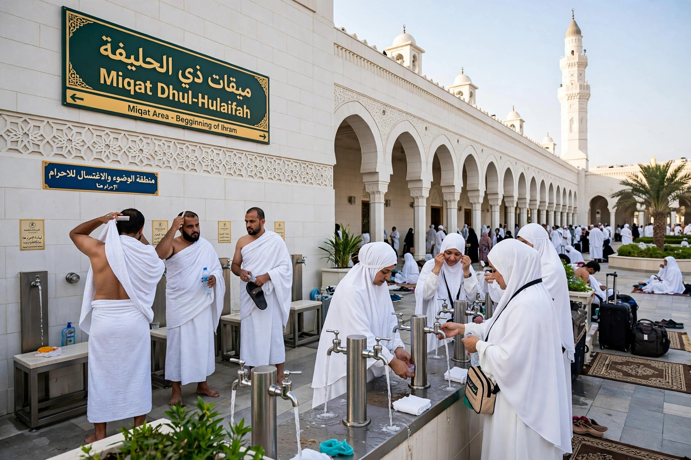
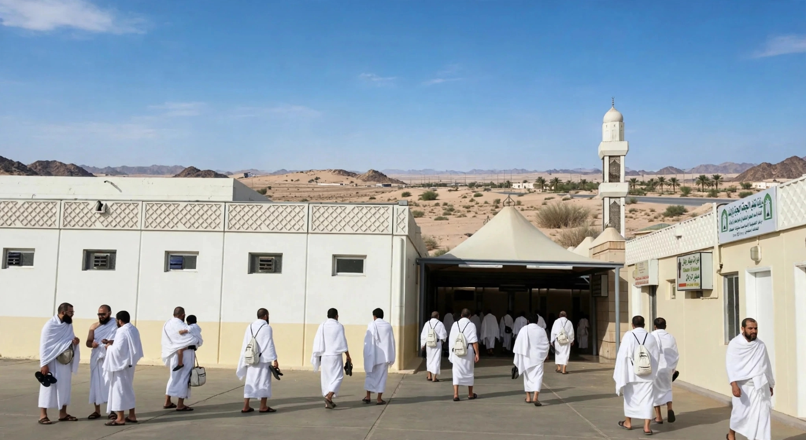
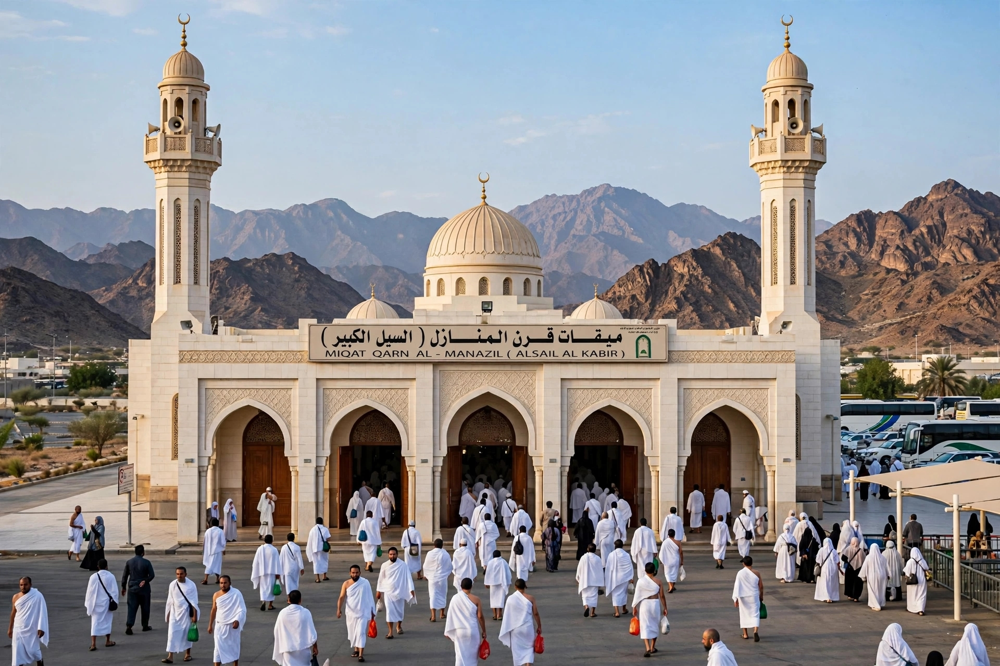
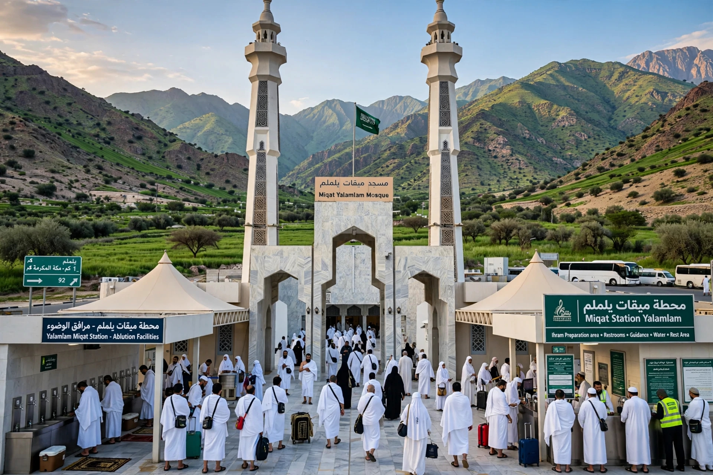
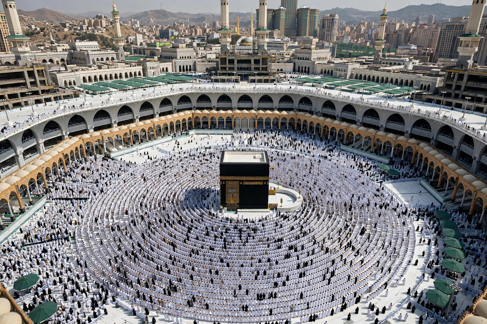
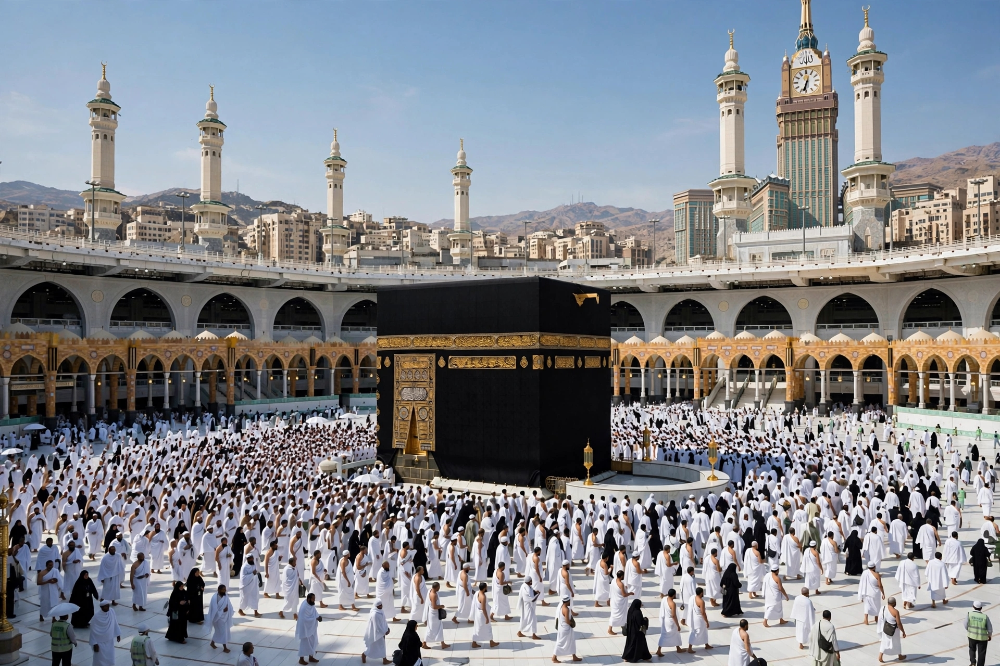
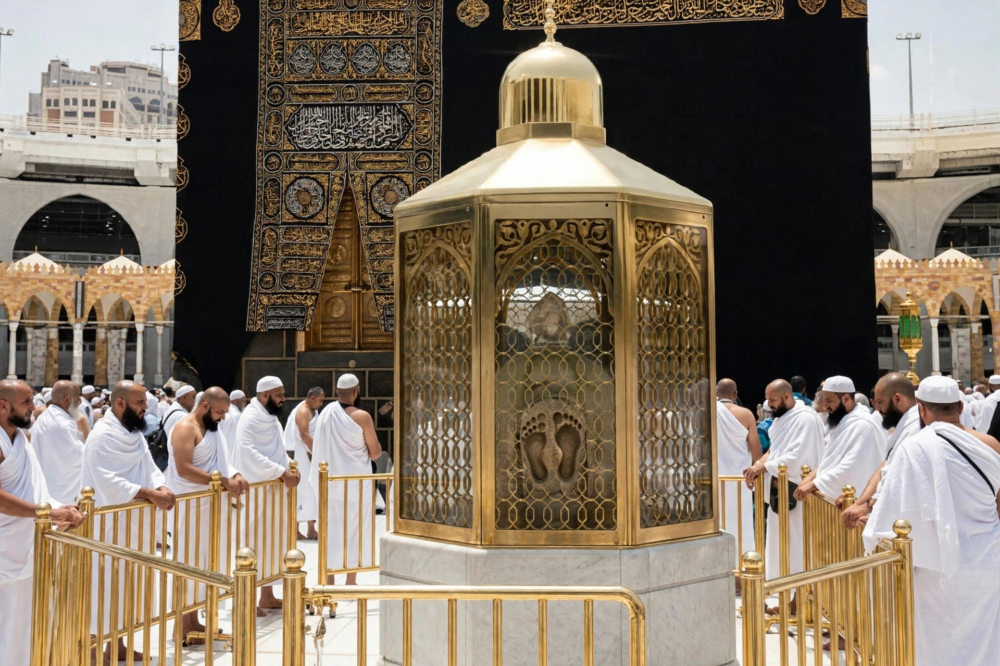
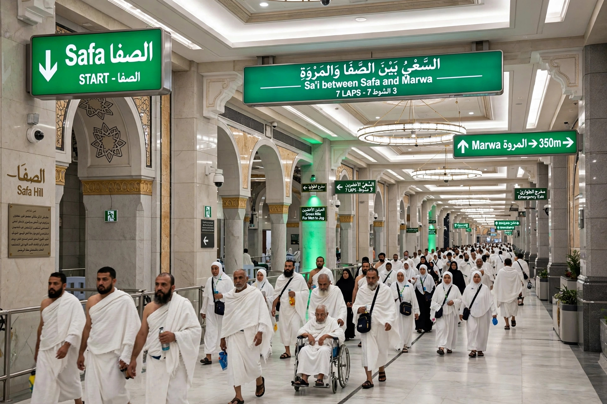
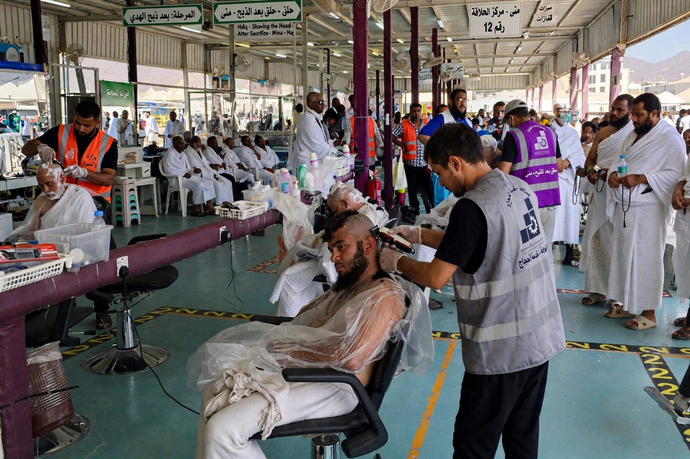

Menene Umrah?
Umrah ita ce:
- Niyya
- Ihrami
- Tawafi a Ka'aba
- Sa'ayi tsakanin Safa da Marwa
- Aske gashi ko rage shi.
“Ku cika Hajji da Umrah domin Allah.” — Al-Baqarah 2:196.
B. YADDA AKE UMRAH
1. Kafin a shiga Ihrami
Idan mutum zai wuce Miqat yana da niyyar Umrah, sai ya shirya. Ana so ya:
- yi wanka,
- tsaftace jikinsa,
- namiji ya sanya tufafin Ihrami,
- mace ta sanya tufafin da suka dace da suturarta.
Namiji: zanin ƙasa da mayafi biyu marasa dinki irin na jiki. Bayan haka sai ya shiga Ihrami.
2. Miqat
Annabi ﷺ ya sanya wuraren da mutanen da suke zuwa Makkah za su shiga Ihrami idan suna da niyyar Hajji ko Umrah. Daga cikin su:
| Wuri | Mutanen da ya dace da su |
|---|---|
| Dhul-Hulayfah | mutanen Madina |
| Al-Juhfah | mutanen Sham |
| Qarn al-Manazil | mutanen Najd |
| Yalamlam | mutanen Yemen |
• Ga hoton Zulhulaifa: ana kiran yanzu da (Abyr Ali)

Wannan shine miqati na Mahajjata da suka zo ta hanyar Madina.
• Ga hoton juhfah wanda yanzu ake kira da Rabigh:

Wannan shine miqati na Mahajjata da suka zo ta hanyar Sham, Misra da Arewacin Afrika, Mahajjata za su sanya ihrami a nan.
• Ga hoton Qarnil Manazil (As-Asyl Al-Kabir):

Wannan shine miqati na Mahajjata da suka zo daga Najd da Ɗa'if da Gabas.
• Ga hoton Yalamlam:

Wannan shine miqati na Mahajjata da suka zo daga Yemen, da Indiya da waƴanda suka zo ta Teku da Kudanc Duniya
3. Yin Talbiya
Bayan Ihrami sai mutum ya fara:
لَبَّيْكَ لَا شَرِيكَ لَكَ لَبَّيْكَ،
إِنَّ الْحَمْدَ وَالنِّعْمَةَ لَكَ وَالْمُلْكَ،
لَا شَرِيكَ لَكَ.
Ma'ana: “Ga amsarka ya Allah, ga amsarka. Babu abokin tarayya gare Ka. Ga amsarka. Lalle yabo da ni'ima da mulki naka ne. Babu abokin tarayya gare Ka.”
4. Shiga Makkah
Idan ya isa Makkah, sai ya shiga Masjid al-Haram. Idan ya isa Ka'aba, sai ya fara Tawafi.

5. Tawafin Umrah
Tawafi = zagayawa Ka'aba sau bakwai.
Daga ina ake farawa?
Daga wajen Hajar Aswad. Idan mutum ya iya isa gare shi ba tare da cutar da mutane ba, zai sumbace shi. Idan ba zai iya ba, sai ya nuna masa ya ce:
Kada mutum ya tura mutane ko ya cutar da su domin ya kai ga Hajar Aswad.
Yadda ake zagayawa
- Ka'aba tana kasancewa a gefen hagu.
- Sai ya yi: zagaye na 1, 2, 3, 4, 5, 6, 7.

6. Bayan Tawafi
Bayan zagaye bakwai, sai a yi sallar raka'a biyu. Ana so a yi ta bayan Maqam Ibrahim idan hakan zai yiwu ba tare da cunkoso ko cutar da mutane ba. Idan ba zai yiwu ba, mutum zai iya yin ta a wani wuri na Masjid.
“Ku riƙi Maqam Ibrahim ya zama wurin salla.” — Qur'ani 2:125

7. Sa'ayi tsakanin Safa da Marwa
“Safa da Marwa suna daga cikin alamomin Allah.” — Al-Baqarah 2:158.
Sai ya yi sa'ayi sau bakwai:
| Lamba | Daga → Zuwa |
|---|---|
| 1 | Safa → Marwa |
| 2 | Marwa → Safa |
| 3 | Safa → Marwa |
| 4 | Marwa → Safa |
| 5 | Safa → Marwa |
| 6 | Marwa → Safa |
| 7 | Safa → Marwa (ana ƙarewa a Marwa) |

8. Aske ko rage gashi
Bayan Sa'ayi sai a fita daga Ihrami ta hanyar:
- Namiji: Halq: aske kai gaba ɗaya. Taqsir: rage gashi. Aske kai gaba ɗaya yana da falala mafi girma; Annabi ﷺ ya yi addu'a ga masu aske kai, sannan ya sake yi wa masu ragewa. Wannan ya zo cikin hadisai sahihai.
- Mace: Ba ta aske kanta. Sai ta rage kaɗan daga ƙarshen gashinta.
